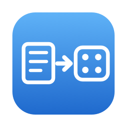
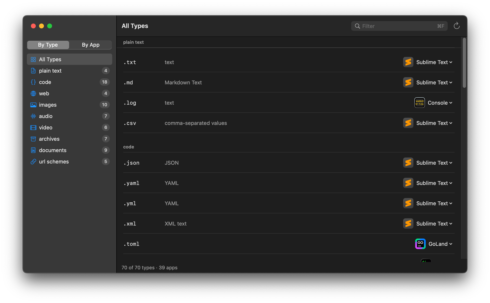

View and set default apps on macOS — which app opens which file extension, UTI or URL scheme.

brew tap klabast/tap
brew trust klabast/tap # required for third-party taps
brew install mda # cli
brew install --cask macosdefaultapps # appA modern successor to RCDefaultApp, SwiftDefaultApps and duti that allows you to set the default app on modern macOS.
mda get md # default handler for .md
mda ls md # all candidates, default marked *
mda set com.sublimetext.4 md # set a handler
mda dump --json # every curated type + current handler
mda apply ~/.duti # apply a settings fileYour associations are a plain text file. Snapshot them, put ~/.mda in your dotfiles, restore on the next machine — apps that aren't installed yet are skipped and reported, run it again after installing them.
mda save # snapshot current handlers to ~/.mda/default
git init ~/.mda # make saves diffable (mda warns if you don't)
mda apply # restore — on this or any other machineRequires macOS 15+. Changing the default browser always shows a macOS consent dialog — that's the system, not the app.